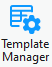
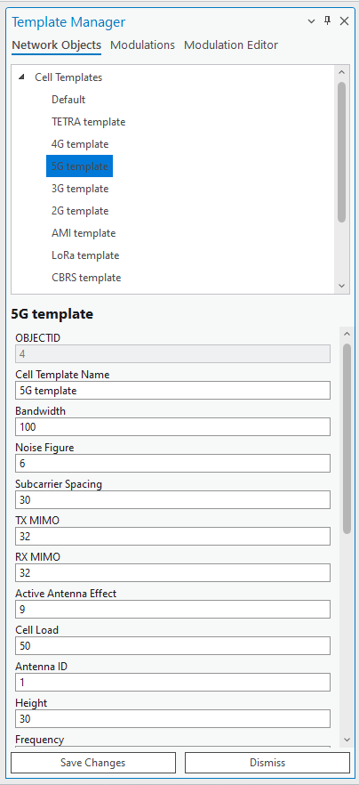
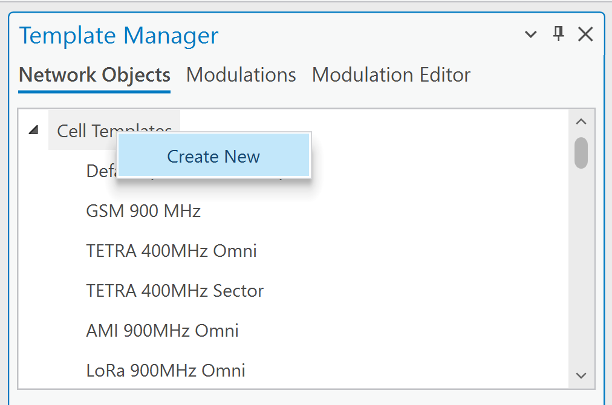
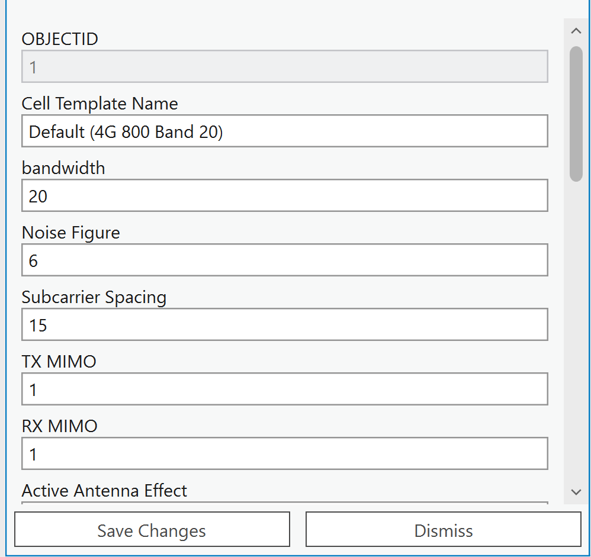
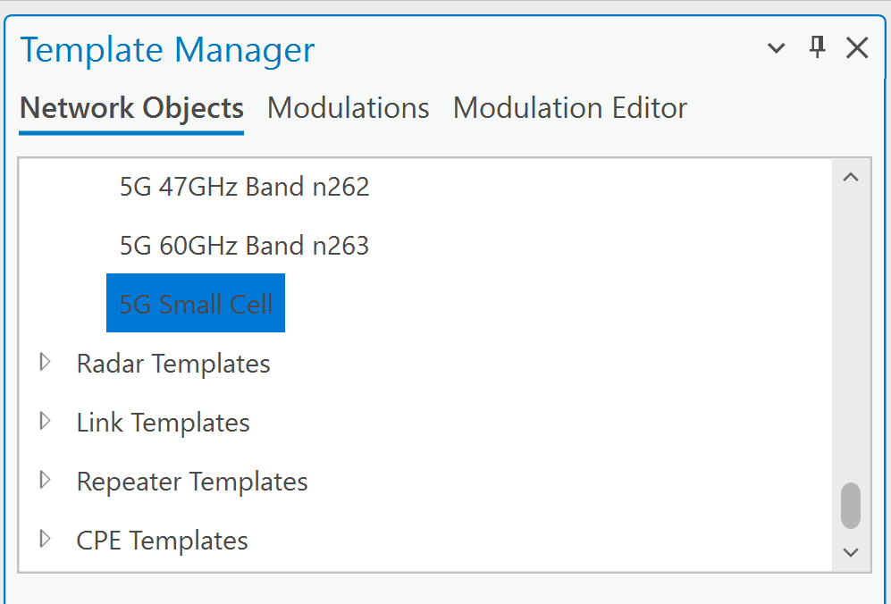
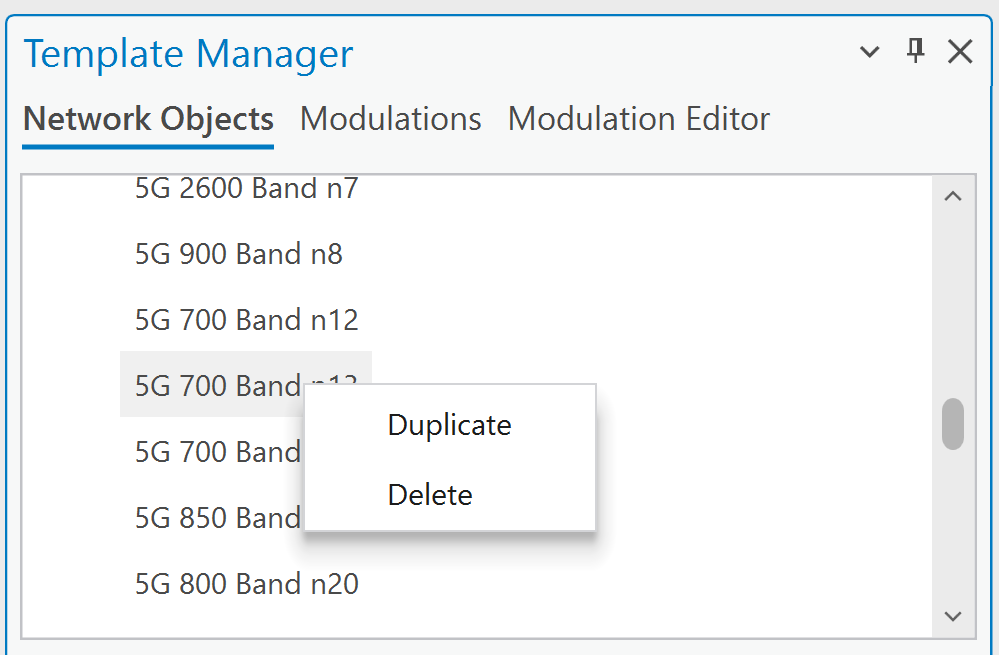
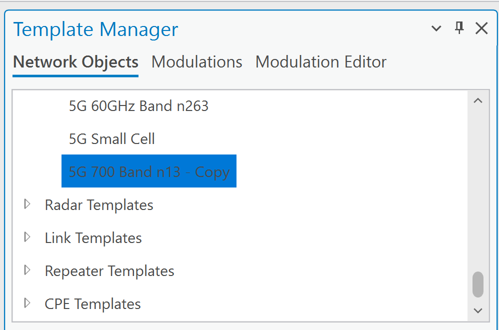
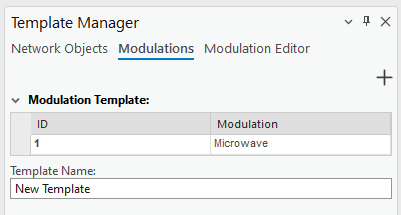
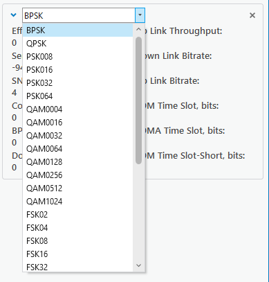
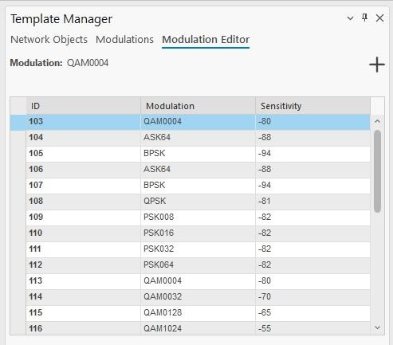

Data Management — Template Manager
7.8 Template Manager
Template Manager allows the user to edit current project templates residing in the various Template tables
 of the default.gdb. The user may change the field values of the templates, create new or detele existing
templates.
Templates are essential tools designed to streamline and simplify the configuration process by predefining
parameters automatically. Their primary purpose is to save time and reduce the risk of human error during
setup, particularly in complex scenarios like wireless network configuration.
Here’s why templates are beneficial:
of the default.gdb. The user may change the field values of the templates, create new or detele existing
templates.
Templates are essential tools designed to streamline and simplify the configuration process by predefining
parameters automatically. Their primary purpose is to save time and reduce the risk of human error during
setup, particularly in complex scenarios like wireless network configuration.
Here’s why templates are beneficial:
-
Automatic Parameter Filling: Templates automatically populate required parameters, eliminating the need for users to input them one by one. This ensures consistency and speeds up the setup process, especially when working with large datasets or multiple network layers, such as cells, sites, or CPEs.
-
Error Prevention: In cases where a parameter might be inadvertently missed during manual configuration, templates act as a safeguard. They ensure all necessary parameters are accounted for, reducing the likelihood of incomplete or incorrect setups.
-
Coverage Prediction Assurance: Templates are particularly valuable when performing tasks like coverage predictions. If a parameter in the wireless network layer is forgotten or overlooked (e.g., for a cell, site, or CPE), the template provides a fallback, ensuring that the prediction can still be performed accurately and without interruption. By using templates, users can maintain efficiency, accuracy, and reliability in network planning and analysis, even in "just-in-case" scenarios where manual inputs might fall short. The templates are divided into categories: • Network Objects – edit and manage network objects (cells, sites, links, etc) templates. Templates are divided into different network layers, each network have unique template structure based on available parameters in network layer. • Modulations – create modulation configurations that can be used for MW links > Radios. • Modulation Editor – create single modulations, which can be used in the Modulations tab.
7.8.1 Edit Network Objects template
Click the button to open the Template Manager dialogue. Select one of the opened templates to edit


them. Save Changes Saves the changes to the objects. Dismiss Cancels the changes to the objects and closes the dialogue.7.8.2 Manage Network Object Template
7.8.2.1 Create New template Right-click on network layer for which you would like to create a new template.
Fill parameters for new template. Press Save Changes to create a new template and save its parameters. The created template will be added


at the end of network template list.7.8.2.2 Duplicate or Delete existing template Right-click on a selected template to open the context menu with Duplicate and Delete options. Duplicate will create a new template with the same parameters, and add it at the end of network template


list.Delete will remove this selected template.
7.8.3 Modulations
The modulations are used in MW link calculations and specifically can be defined for Radios. Instead of specifying Modulations one by one, the customer can create a set of them, and it is available in this tab.


To preview and edit the Modulations template, click on it in the table.(top right) A new modulation with default values can be initialized.

 X
Modulation can be removed.
Save changes
All changes will be saved.
Dismiss
X
Modulation can be removed.
Save changes
All changes will be saved.
Dismiss
Remove changes. To create a new Modulation template, press button in the top right corner of the dialog to initialize a


new template. Template name The name of the modulation template. (under the template name field) Assign modulation to the template. Use the modulation drop-down list menu to apply and include the modulations. Once the changes are made, click the Create button at the bottom of the window to create a new modulation template.7.8.4 Modulation Editor
The list of available modulations is taken from the Modulation Editor tab.
To add a new modulation, click the at the top right of the Modulation Editor window to initialize a new


 modulation with default values, and press the Create button at the bottom of the window. Alternatively, click
on an existing one to edit its parameters.
Create
Create a new modulation with the specified parameters.
modulation with default values, and press the Create button at the bottom of the window. Alternatively, click
on an existing one to edit its parameters.
Create
Create a new modulation with the specified parameters.
Save Changes Apply changes to a currently selected modulation. The button is disabled if the modulation is not created. Cancel Dismiss changes made to the modulation.